It starts with calm.
Just the mark, then you're in — no clutter, no pressure. The very first screen sets the tone for everything that follows.
Healthcare · Mobile · End-to-end UX/UI
One calm app that carries the whole arc of care — find a doctor, decide, book, and stay on top of the admin that always slips: refills, vaccinations, follow-ups. From “I think I need a doctor” to booked, reminded, and followed up.
UX Researcher & Product Designer.
Research, IA, UX, UI & a full design system.
Concept, validated with users
See how it works
Just the mark, then you're in — no clutter, no pressure. The very first screen sets the tone for everything that follows.
A short onboarding that says one true thing — “healthcare made easy” — instead of five features fighting for attention. Calm is the first design decision.
Home answers the question people actually open the app with — what's next — then offers a fast way to act, and only then, to explore.
Search, then filter by location and compare on what matters — rating, specialty, distance — from clean cards you can decide on at a glance.
Photo, rating, specialty and credentials up top; reviews and availability a tap away — and one clear “Book appointment” when you're ready.
Set a medication reminder around your actual day — how often, and exactly which times — so doses and refills stop slipping through the cracks.
Chat, voice, photos and video keep your clinician one tap away — so the relationship doesn't end the moment the visit does.
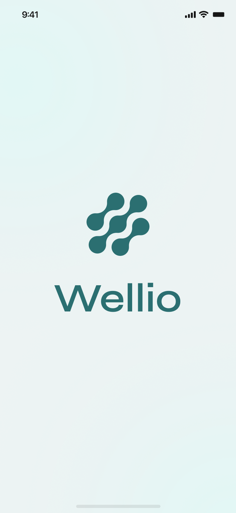

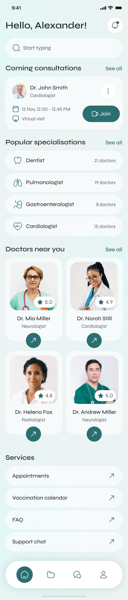
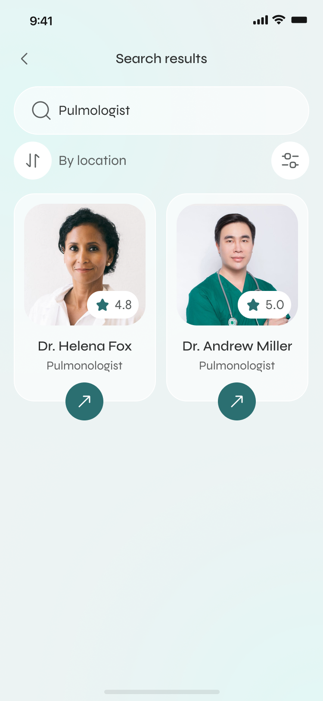
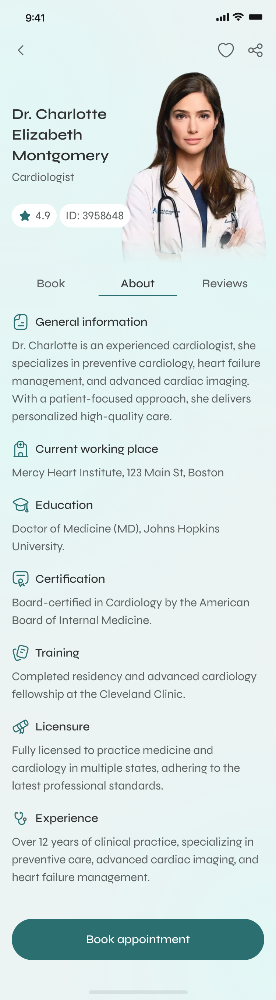
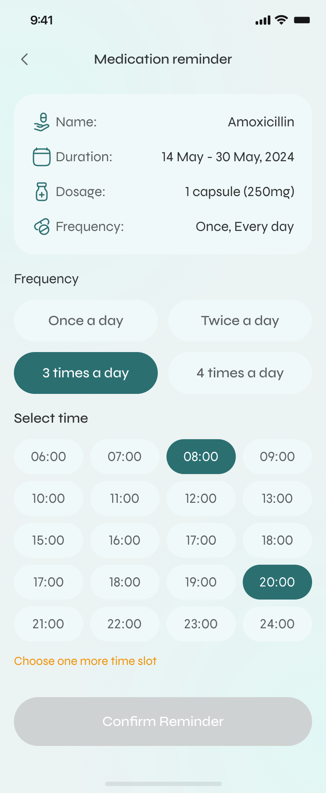
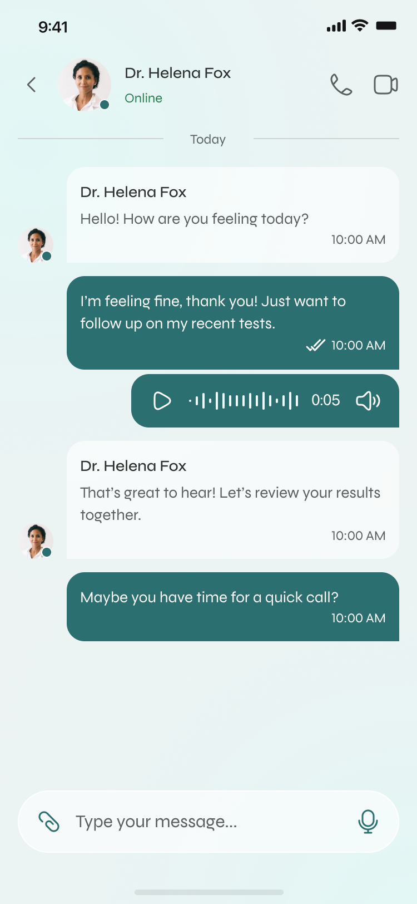
The problem
For most of us, the hard part of healthcare isn't the medicine. It's the logistics.
This project started with a small, unglamorous moment: a friend asking me to help her find the PDF of her blood test, because the clinic “sent it somewhere.” Twenty minutes later — an expired SMS link, a portal that logged her out twice — she still didn't have a number off a page. She wasn't sick. She was just trying to get to her own information. Getting care is technically possible and emotionally exhausting, and the admin around health quietly falls through the cracks until it becomes urgent.
Almost nobody wakes up looking for a “gastroenterologist.” They search “stomach” and hope the app meets them there. Forcing medical vocabulary is the first place we lose people.
Before booking, people scan for the same five things — face, rating, languages, price, next slot. Miss one and they bounce to Google, and often don't come back.
The visit ends and the relationship ends with it. No record, no follow-up, no easy way to ask the one question you forgot in the room.
The approach
You can't fix a feeling you haven't sat with. Before a single screen, I went to the people who carry the weight of “managing health” — and it's rarely just the patient.
12 interviews and a survey across three groups — busy professionals, parents running a whole family's care, and people over 60 managing ongoing conditions. Each group breaks in a different place.
Used insurer portals, booking marketplaces and wellness apps the way a patient would. Each nails one third of the journey — and none owns the whole arc.
I never asked “what features do you want.” I asked “walk me through the last time you needed a doctor.” Stories surface the friction that feature lists hide.
Three kinds of product, each owning one third of the journey — and a seam running straight down the middle that nobody had picked up.
Clalit · Maccabi · MyChart
Strength: real medical data and official records.
Gap: built around the institution, not the person — dense, clinical, intimidating.
ZocDoc · Practo · Doctolib
Strength: finding and booking a doctor is genuinely easy.
Gap: the relationship ends at the booking — no records, no follow-up.
Apple Health · Ada · Flo
Strength: beautiful, motivating, habit-forming.
Gap: disconnected from real care — they watch you, but can't get you seen.
Each category nails one third of the arc. Nobody owns the whole thing — find → decide → book → remember → follow up — as one continuous experience. That arc became Wellio's reason to exist.
I turned the friction into How-Might-We questions, then answered the hardest one — with sixteen feature areas, what earns the home screen and what waits one tap away?
Medical depth lives in Records, where people go looking with intent — not scattered across the surface where it just creates anxiety.
The solution
Every decision traces straight back to something a real person said.
01
Finding care is built to be quick and low-effort: search and filter by specialty, name or location, with results that lead with rating and distance so the choice is easy. And every doctor profile opens on what people actually scan for — photo, rating, specialty and credentials — with reviews and a clear “Book appointment” one tap away, so the page informs without burying the one button that matters.
02
This is the fix that actually changes lives. Booking, rescheduling and cancelling all happen in-app, with designed success and failure states — the hold music is gone. Prescriptions, refills and history live together, medication reminders are built around real days (snooze, skip, mark as taken), and the vaccination calendar remembers so a parent doesn't have to.

03
Health metrics gather vitals, lifestyle, history and notes into one organised picture — grouped to read at a glance, with calm empty states for anyone just starting out. And chat, voice notes, photo sharing and video visits keep the clinician one tap away after the appointment — typing states, message actions, lock-screen notifications all handled, so the channel feels as reliable as texting a friend.
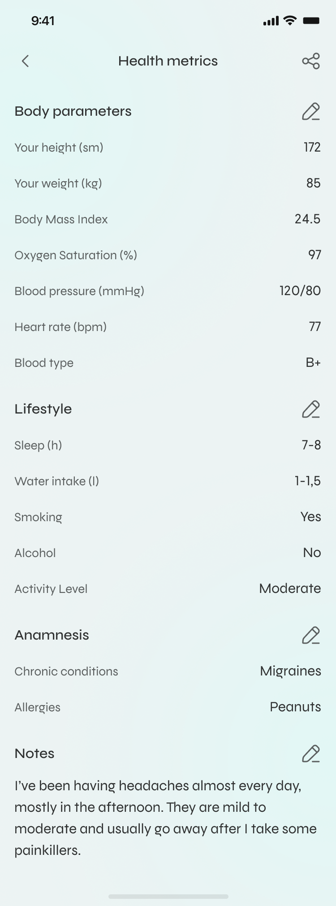
One calm system — soft teals, generous space, real photography, and one clear action per screen. Health is stressful enough; the interface should lower the heart rate, not raise it.
Onboarding & your patient card
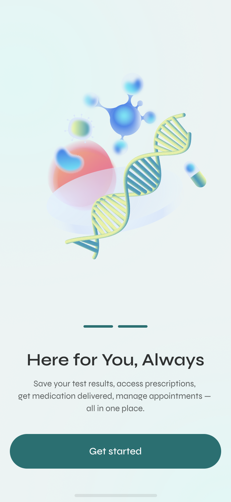
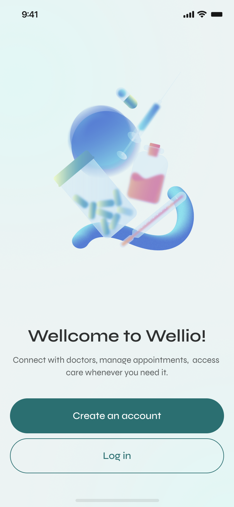
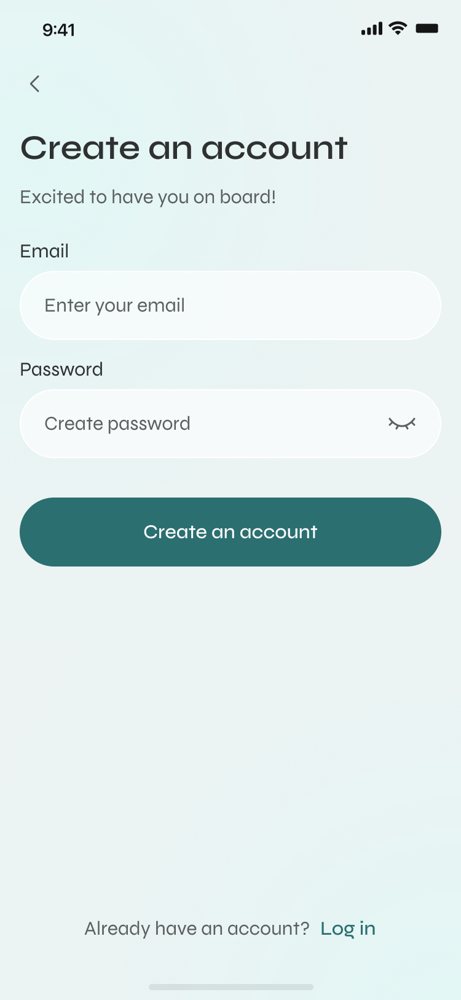
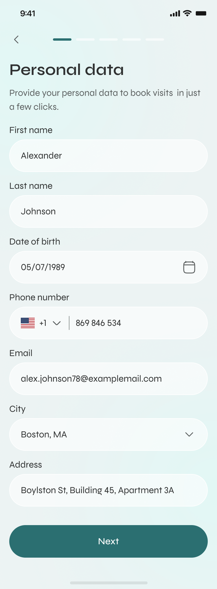
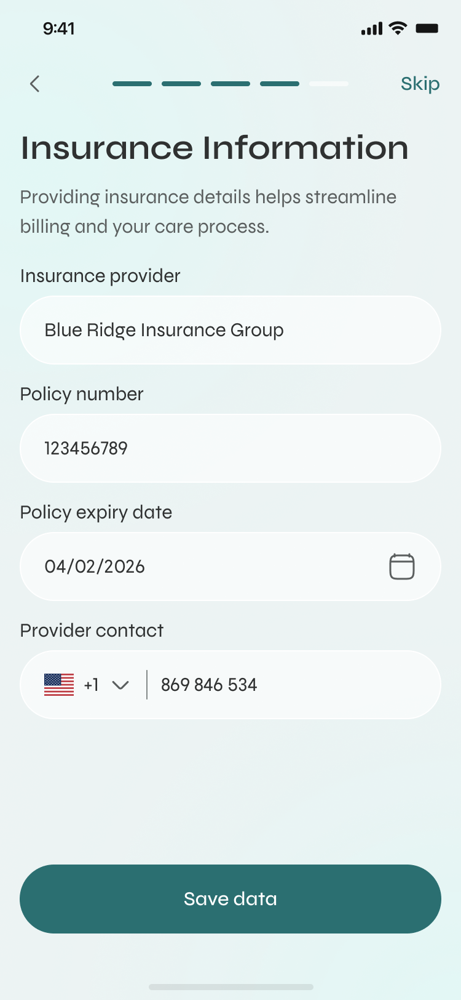
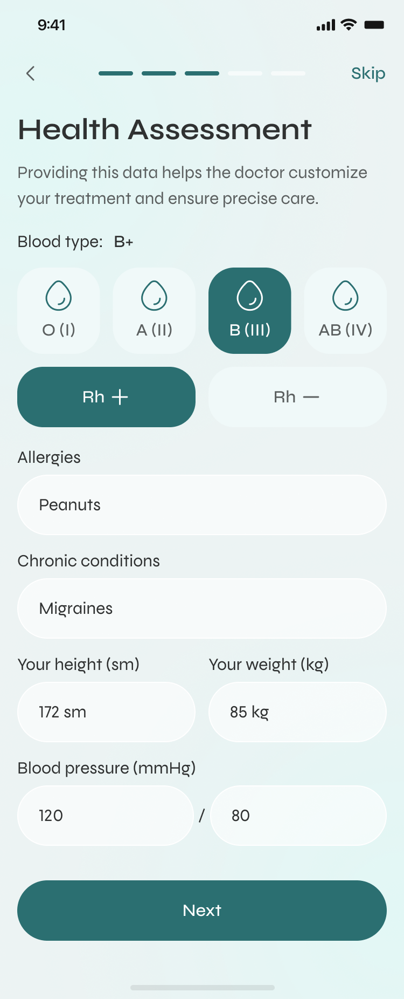
Home — find & book care
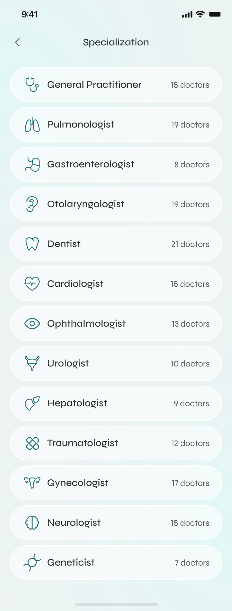

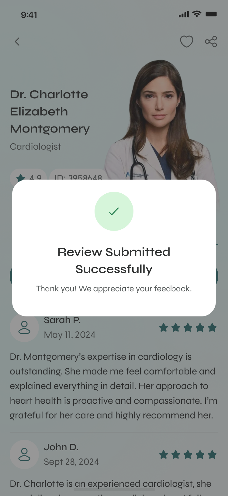
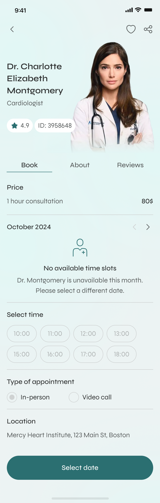
Records — everything in one place
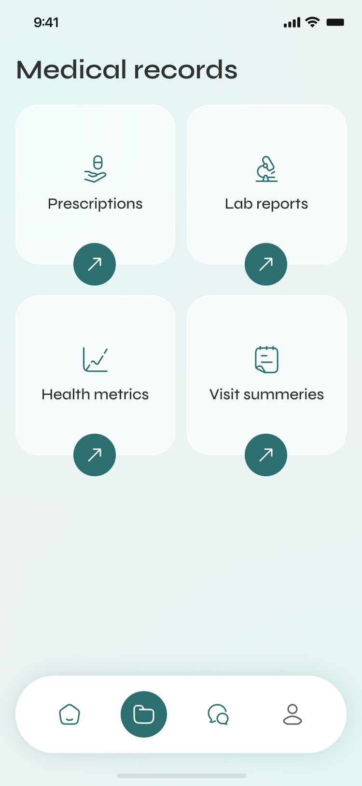
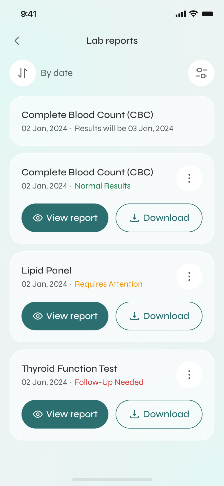
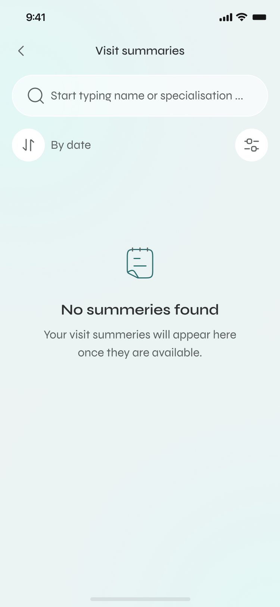
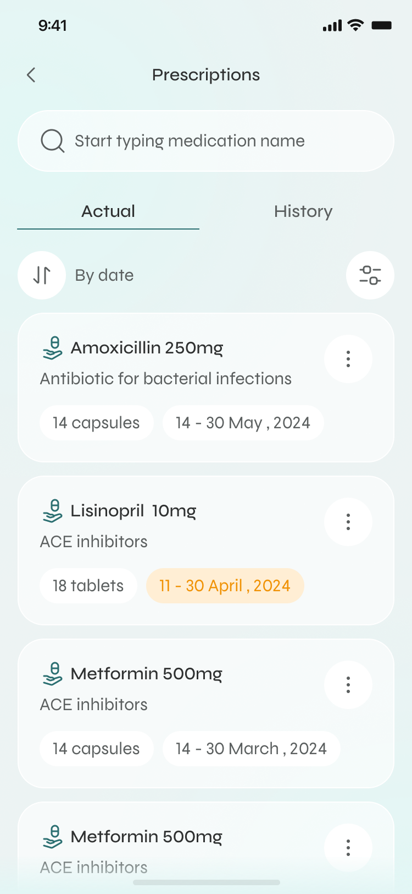
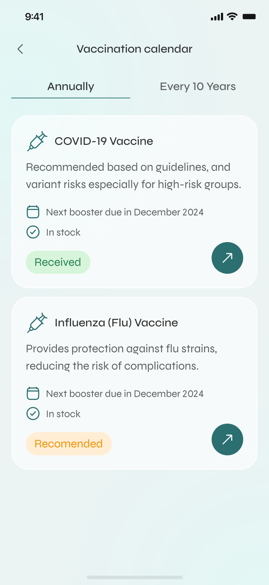
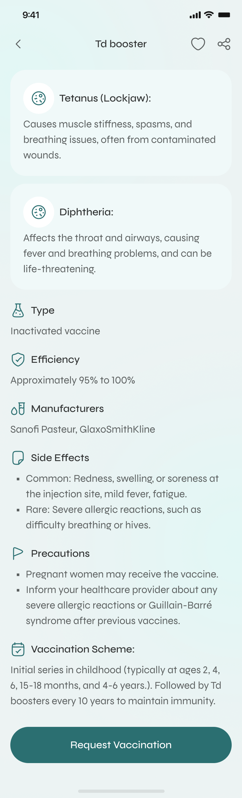
Chat — care that continues
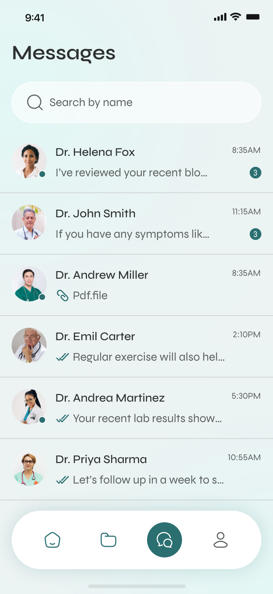
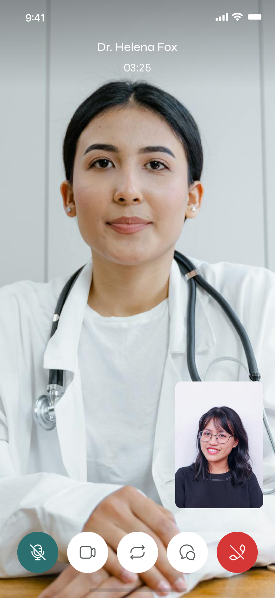
The craft
A demo is the happy path. A product is everything that happens when the happy path breaks. A real chunk of this project was the moments nobody screenshots.
No appointments, no prescriptions, no results yet — each reassures and points to the next action instead of showing a blank void.
Expired links, taken slots, failed reschedules, dropped networks — written in human language, always with a way forward.
Readable type, strong contrast on the teal palette, and tap targets sized for an older hand — not just a designer's thumb.
Sensitive data framed carefully, share actions made explicit, nothing on the home screen you wouldn't want a stranger to glance at.
How I'd know it worked
In healthcare, more time in the app isn't a win. I'd hold the design against numbers that mean someone's life actually got easier.
From opening the app to a confirmed appointment — measured in friction, not screens visited.
Refills reordered and vaccinations kept on schedule without a human chasing them.
People coming back because it's genuinely easier here — not because a notification nagged them.
A concept validated with 12 interviews and a survey across three user groups — busy professionals, parents managing a family's care, and people over 60 — plus follow-up usability sessions. Directional signal, not production analytics.
“It's the first time booking a doctor felt like ordering a taxi. I didn't dread it.”
— Participant, professional · usability session“The reminders are the bit I'd actually pay for. My dad's pills never run out anymore in the prototype.”
— Participant, family carer · interview“Everything's in one place. I'm not hunting through three apps and an email for my own results.”
— Participant, 60+ · usability session“I don't need an app to diagnose me. I need it to stop making me feel like I'm filing taxes every time I want to see someone.” — that line shaped the whole project.
— Participant, first round of interviews
The biggest lesson was restraint. With sixteen feature areas, the temptation was to surface everything — and every time I gave in, the home screen got a little more frightening. The work that mattered most wasn't adding; it was deciding what to hide, and trusting people to find depth when they needed it. Next, I'd prototype the family-account model properly — switching between “me” and “my dad” is the flow most likely to make or break this for the people who carry everyone else's health. That's the hard, human problem I'd want to solve next.
Keep exploring

A clearer research platform and an AI companion that turns weeks of synthesis into hours.
Read case study →
A warm, visual routine app autistic children can see, build, and run on their own.
Read case study →
Cutting friction across parking, services, and support on a city portal.
Read case study →